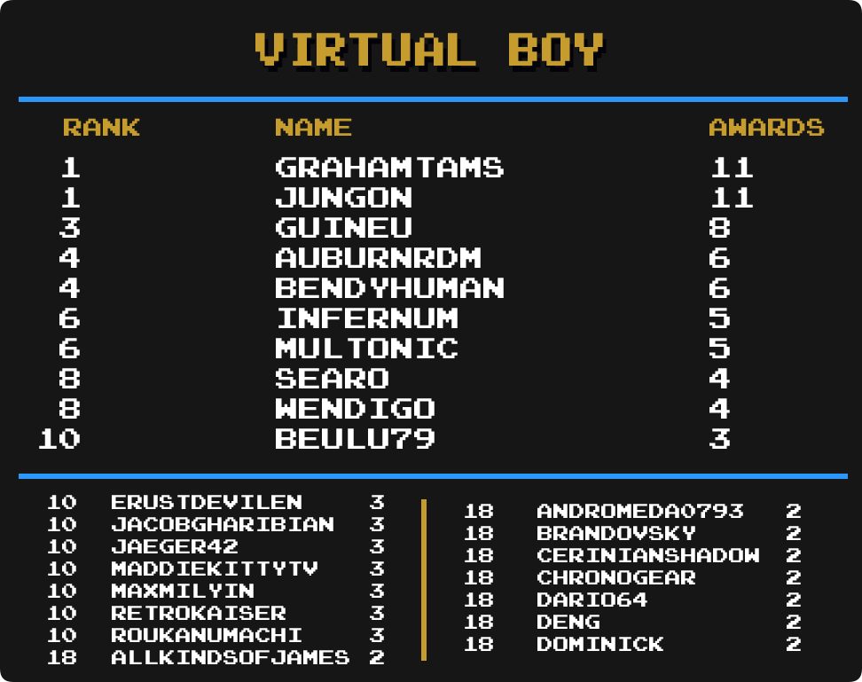

Top Masteries
 By
MrOwnership
By
MrOwnership
Contents
- Intro
- Current Champions
- Notable Milestones
-
Category Rankings
- Total Awards
- Total Awards (Excluding Hacks)
- Events
- Amstrad CPC
- Arcade
- Arduboy
- Atari 2600
- Dreamcast
- Fairchild Channel F
- Game Boy
- Game Boy Advance
- Game Boy Color
- Game Gear
- Hack Champ
- Homebrew Champ
- Master System
- Mega Drive
- Nintendo 64
- NES
- Nintendo DS
- PC-8000/8800
- PC Engine
- PlayStation
- PlayStation Portable
- Pokémon Mini
- Sega Saturn
- Sega CD
- SNES
- Virtual Boy
- WASM-4
- Watara Supervision
Intro
We are going to take a look at another metric for greatness, Mastery Awards. Mastery awards are given to users when they complete every achievement for a given set in hardcore mode. Users wear mastery awards as a badge of honor on their profile page representing all the hard work they put into truly becoming a master of the game.
Below we will take a look at which users rank among the best with the most mastery awards in several categories well as notable updates from the previous month to each individual category. Check to see how you rank among the rest of the community members.
Special thanks to  Nydaxn for creating the ranking image templates.
Nydaxn for creating the ranking image templates.
* Data as of August 1st 2022.
Current Champions
|
|
|
Mastery Awards | |
|---|---|---|---|
| Total Awards |  guineu guineu |
825 | |
| 3DO Interactive Multiplayer | guineu |
8 | |
| Amstrad CPC |  roukanumachi roukanumachi |
14 | |
| Apple II | guineu |
12 | |
| Arcade |  dcmpinguin dcmpinguin |
59 | |
| Arduboy |  HolyShinx HolyShinx |
35 | |
| Atari 2600 |  PMniac PMniac |
96 | |
| Atari 7800 | PMniac |
10 | |
| Atari Jaguar | PMniac |
5 | |
| Atari Lynx |
guineu &  Jungon Jungon
|
5 | |
| ColecoVision | PMniac |
9 | |
| Dreamcast |  SteveHarvey SteveHarvey |
19 | |
| Events |  televandalist televandalist |
28 | |
| Fairchild Channel F |
 alphacrust & alphacrust &  AuburnRDM AuburnRDM
|
18 | |
| Game Boy |  Shootzy Shootzy |
125 | |
| Game Boy Advance |  bonecrusher1022 bonecrusher1022 |
109 | |
| Game Boy Color |  pitapocket17 pitapocket17 |
57 | |
| Game Gear | Nydaxn |
62 | |
| Hack Champ | HolyShinx |
198 | |
| Homebrew Champ | AuburnRDM |
166 | |
| Intellivision | Jungon |
14 | |
| Magnavox Odyssey 2 | Jungon |
7 | |
| Master System | Jungon |
74 | |
| Mega Drive |  DUT DUT |
119 | |
| Mega Duck |
 Infernum, Infernum,  Jaeger42, Jaeger42,  soltyd & soltyd &  TheRealBillHicks TheRealBillHicks
|
4 | |
| MSX | guineu |
8 | |
| Nintendo 64 |  BenTobitt BenTobitt |
45 | |
| Neo Geo Pocket |  MelodyAsh MelodyAsh |
7 | |
| NES |  SanMarino SanMarino |
241 | |
| Nintendo DS |  Olafur Olafur |
68 | |
| PC Engine | Infernum |
38 | |
| PC-8000/8800 | guineu |
10 | |
| PC-FX |
 Annonith & Annonith &  YahwehTzVaoth YahwehTzVaoth
|
4 | |
| PlayStation |  FBiDev FBiDev |
80 | |
| PlayStation Portable |  minibt minibt |
34 | |
| Pokémon Mini |  Sylrifaide Sylrifaide |
32 | |
| Sega 32X |  Fara0 Fara0 |
4 | |
| Sega Saturn |  Orph Orph |
15 | |
| Sega CD | Orph |
9 | |
| SG-1000 |
PMniac & Jungon
|
9 | |
| SNES |  danibodom danibodom |
200 | |
| Vectrex | Jungon |
9 | |
| Virtual Boy |
 Grahamtams & Jungon Grahamtams & Jungon
|
11 | |
| WASM-4 | AuburnRDM |
27 | |
| Watara Supervision |  Sarconius Sarconius |
42 | |
| WonderSwan |
Annonith, AuburnRDM & |
3 |
Notable Milestones
800 Mastery Awards
| guineu |
400 Mastery Awards
 HippopotamusRex HippopotamusRex |
300 Mastery Awards
 Retrokaiser Retrokaiser |
 Lonoke31 Lonoke31 |
200 Mastery Awards
 voiceofautumn voiceofautumn |
 RomaKiev RomaKiev |
 Nastas Nastas |
 missiray missiray |
 Maximdraco Maximdraco |
 Jacobgharibian Jacobgharibian |
 Beulu79 Beulu79 |
100 Mastery Awards
| soltyd |
 Sairotra Sairotra |
 Rafaelsssss Rafaelsssss |
 perdiga perdiga |
 PablloVittar PablloVittar |
 NeowaveBR NeowaveBR |
 mudrik mudrik |
 MatheusBrazuca85 MatheusBrazuca85 |
 LiveFastCyYoung LiveFastCyYoung |
 Kofigao Kofigao |
 GreninjaMan GreninjaMan |
 GIGsnake GIGsnake |
 domenyX domenyX |
 Dododo Dododo |
 CMatador CMatador |
 Adenothe Adenothe |
Category Rankings
Total Awards
-
guineu has surpassed 800 mastery awards and is in 1st with 825.
-
 NickGoat1990 has made it into the top 25 and is in 22nd place.
NickGoat1990 has made it into the top 25 and is in 22nd place. - A total of 320 mastery awards have been awarded to the top 25 this month.
Total Awards (Excluding Hacks)

-
guineu has surpassed 800 mastery awards and is in 1st with 804.
-
 Bendyhuman has moved into 3rd place with 19 new mastery awards this month.
Bendyhuman has moved into 3rd place with 19 new mastery awards this month. -
HolyShinx has made it into the top 25 and is in 24th place.
Events

-
televandalist remains in 1st place with 28 total master awards.
-
 Pudpod &
Pudpod &  TheJediSonic have made it into the top 25 and are in a 7-way tie for 18th place.
TheJediSonic have made it into the top 25 and are in a 7-way tie for 18th place.
Amstrad CPC

-
roukanumachi remains in 1st place with 14 total master awards.
-
 alundra82 has jumpt up 12 spots into 7th place.
alundra82 has jumpt up 12 spots into 7th place. -
 LordAndrew has made it into the top 25 and is in a 9-way tie for 11th place.
LordAndrew has made it into the top 25 and is in a 9-way tie for 11th place.
Arcade

-
 dcmpinguim have move into sole possession of the top sopt with 59 total master awards.
dcmpinguim have move into sole possession of the top sopt with 59 total master awards. -
 Barra &
Barra &  ramosgamer81 have made it into the top 25 and are in a 5-way tie for 22nd place.
ramosgamer81 have made it into the top 25 and are in a 5-way tie for 22nd place.
Arduboy

-
HolyShinx has taken the top sot with 20 new mastery awards this month.
-
 Burgins has made it into the top 25 and is in 10th place.
Burgins has made it into the top 25 and is in 10th place. -
 AllKindsOfJames,
AllKindsOfJames,  Brandovsky &
Brandovsky &  FlareEX have made it into the top 25 and are in a 3-way tie for 18th place.
FlareEX have made it into the top 25 and are in a 3-way tie for 18th place.
Atari 2600
-
PMniac remains in 1st place with 96 mastery awards
-
 dtkiller moves up 1 spot into a tie for 15th place
dtkiller moves up 1 spot into a tie for 15th place -
 HotCoffee moves up 3 spots into 18th place
HotCoffee moves up 3 spots into 18th place
Dreamcast
-
SteveHarvey remains in 1st place with 19 total mastery awards.
-
 Tirbaba has made it into the top 25 and is in a 3-way tie for 14th place.
Tirbaba has made it into the top 25 and is in a 3-way tie for 14th place. -
 Biendeo &
Biendeo &  MaddieKittyTV have made it into the top 25 and are in a 12-way tie for 17th place.
MaddieKittyTV have made it into the top 25 and are in a 12-way tie for 17th place.
Fairchild Channel F

-
alphacrust & AuburnRDM are tied in 1st with 18 mastery awards
-
 phalnx is in 3rd place with 11 mastery awards.
phalnx is in 3rd place with 11 mastery awards. -
 Nevermond12, Maximdraco,
Nevermond12, Maximdraco,  VectorPrime40,
VectorPrime40,  ChaosFox &
ChaosFox &  emad2007 have all made it into the top 25.
emad2007 have all made it into the top 25.
Game Boy

-
Shootzy remains in 1st place with 125 total mastery awards.
-
 PaddyW has made it into the top 25 and is in a 3-way tie for 21st place.
PaddyW has made it into the top 25 and is in a 3-way tie for 21st place. -
 Blazekickn has made it into the top 25 and is in a tie for 24th place.
Blazekickn has made it into the top 25 and is in a tie for 24th place.
Game Boy Advance
-
bonecrusher1022 reremains in 1st place with 109 total mastery awards.
-
MaddieKittyTV has made it into the top 25 and is in a tie for 21st place.
-
 Pixelach has made it into the top 25 and is in a tie for 25th place.
Pixelach has made it into the top 25 and is in a tie for 25th place.
Game Boy Color

-
pitapocket17 remains in 1st place with 57 total mastery awards.
-
 CerinianShadowGaming has made it into the top 25 and is in a 4-way tie for 22nd place.
CerinianShadowGaming has made it into the top 25 and is in a 4-way tie for 22nd place.
Game Gear

-
Nydaxn remains in 1st place with 62 total mastery awards.
-
Infernum moves up 1 spot into a tie for 7th place.
-
 Zio has made it into the top 25 and is in 15th place.
Zio has made it into the top 25 and is in 15th place.
Hack Champ

-
HolyShinx still has a commanding lead with 198 mastery awards.
-
 donutweegee has made it into the top 25 and is in a tie for 16th place.
donutweegee has made it into the top 25 and is in a tie for 16th place.
Homebrew Champ
-
AuburnRDM remains in 1st place with 166 total mastery awards.
-
 miccmike has made it into the top 25 and is in a tie for 25th place.
miccmike has made it into the top 25 and is in a tie for 25th place.
Master System

-
Jungon remains in 1st place with 74 total mastery awards.
-
 sludgemastic has made it into the top 25 and is in 5th place.
sludgemastic has made it into the top 25 and is in 5th place. -
 zumbertinho has made it into the top 25 and is in a 6-way tie for 19th place.
zumbertinho has made it into the top 25 and is in a 6-way tie for 19th place. -
 diegosel has made it into the top 25 and is in a 5-way tie for 25th place.
diegosel has made it into the top 25 and is in a 5-way tie for 25th place.
Mega Drive
-
DUT remains in 1st place with 119 total mastery awards.
-
 aLexxLutorr has moved up 5 spots into a toir for 18th place.
aLexxLutorr has moved up 5 spots into a toir for 18th place.
Nintendo 64

-
BenTobitt remains in 1st place with 45 total mastery awards.
-
MaddieKittyTV &
 Whithbrin have made it into the top 25 and are in a 7-way tie for 14th place.
Whithbrin have made it into the top 25 and are in a 7-way tie for 14th place. -
 Pampa50 has made it into the top 25 and is in a 4-way tie for 21st place.
Pampa50 has made it into the top 25 and is in a 4-way tie for 21st place.
NES
-
SanMarino remains in 1st place with 241 total mastery awards.
-
guineu has made it into the top 25 and is in 23rd place.
-
 ChronoGear has made it into the top 25 and is in 24th place.
ChronoGear has made it into the top 25 and is in 24th place.
Nintendo DS

-
Olafur remains in 1st place with 68 total mastery awards.
-
 Dennis1543 has moved up 9 spots into 8th place with 8 new mastery awards this month.
Dennis1543 has moved up 9 spots into 8th place with 8 new mastery awards this month. -
ChronoGear has made it into the top 25 and is in a 4-way tie for 23rd place.
PC-8000/8800
-
guineu remains in 1st place with 10 total mastery awards.
-
 Doggy227 has made it into the top 25 and is in a 13-way tie for 16th place.
Doggy227 has made it into the top 25 and is in a 13-way tie for 16th place.
PC Engine

-
Infernum remains in 1st place with 38 total mastery awards.
-
NeowaveBR has made it into the top 25 and is in a 3-way tie for 17th place.
PlayStation

-
FBiDev has taken the tp spot with 5 new mastery awards this month.
-
minibt has moved up 5 spots into 3rd place with 16 new mastery awards this month.
-
Infernum has made it into the top 25 and is in a 3-way tie for 22th place.
PlayStation Portable

-
minibt remains in 1st place with 34 total mastery awards.
-
Dennis1543 has made it into the top 25 and is in a 5-way tie for 25th place.
Pokémon Mini

-
Sylrifaide remians in the top spot having mastered all 32 sets.
-
 Jerboa &
Jerboa &  kcoconnor76 have made it into the top 25 and are in a 6-way tie for 20th place.
kcoconnor76 have made it into the top 25 and are in a 6-way tie for 20th place.
Sega Saturn
-
Orph remains in 1st place with 15 total mastery awards.
-
 Reno22 has made it into the top 25 and is in a 10-way tie for 15th place.
Reno22 has made it into the top 25 and is in a 10-way tie for 15th place.
Sega CD
-
Orph remains in 1st place with 9 total mastery awards.
-
 Wendigo has moved up 6 spots into a tie for 3rd place.
Wendigo has moved up 6 spots into a tie for 3rd place. -
AuburnRDM has moved up 8 spots into a tie for 5th place.
-
Retrokaiser has made it into the top 25 and is in a 9-way tie for 5th place.
SNES
Virtual Boy

-
Grahamtams & Jungon remain in 1st place with 11 total mastery awards.
-
Beulu79 has made it into the top 25 and is in a 8-way tie for 10th place.
-
AllKindsOfJames &
 Dominick have made it into the top 25 and are in a 28-way tie for 18th place.
Dominick have made it into the top 25 and are in a 28-way tie for 18th place.
WASM-4

-
AuburnRDM remains in 1st place with 27 total mastery awards.
-
 NEOMAR has moved up 9 spots into 3rd place with 11 new mastery awards this month.
NEOMAR has moved up 9 spots into 3rd place with 11 new mastery awards this month. -
 Thoreau has moved up 12 spots into 4th place with 7 new mastery awards this month.
Thoreau has moved up 12 spots into 4th place with 7 new mastery awards this month. -
Beulu79 has made it into the top 25 and is in a 6-way tie for 13th place.
-
guineu has made it into the top 25 and is in a 7-way tie for 23rd place.
Watara Supervision
 kryptin
kryptin